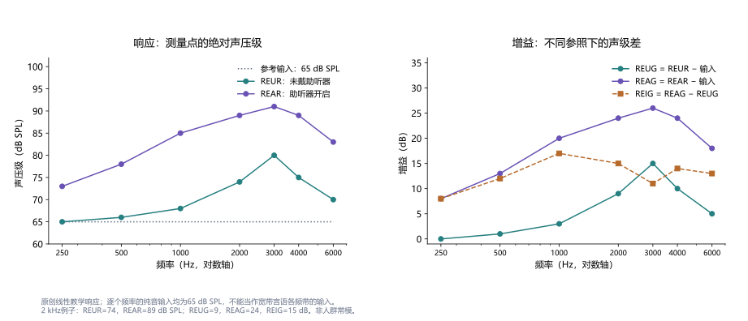
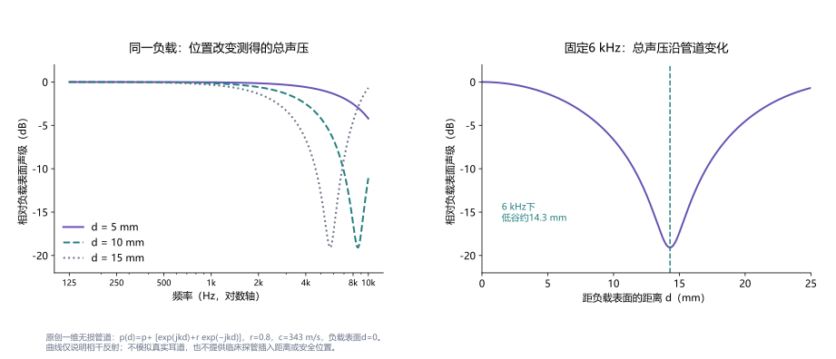
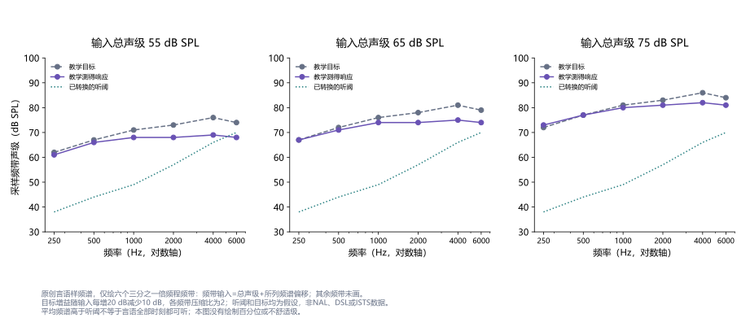
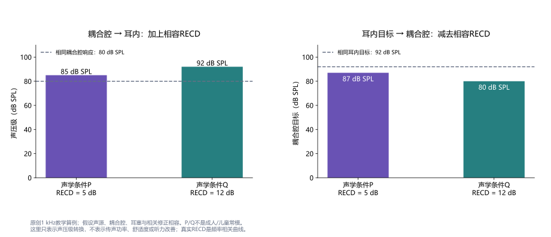

真耳测量
Real-Ear Measurement
真耳测量用探管麦克风记录个体耳道中的声压，核对助听器在不同信号、声级与佩戴条件下的响应。词条解释响应与增益、探管位置、言语映射、处方目标、RECD转换，以及声学验证与实际聆听获益之间的关系。
真耳测量（real-ear measurement，REM）是在个体耳道中测量声压响应的方法，常通过细探管把耳内声音传至测量麦克风，因此也称探管麦克风测量。在助听器验配中，它核对佩戴状态下实际获得的声学响应，弥补软件预测、标准耦合腔和个体耳道之间的差异。12
真耳测量通常无需听者判断是否听到声音，但“客观测量”不等于测出了全部听觉能力。它记录的是测量位置的声压，不直接给出耳蜗获得的功率、神经编码或言语识别率。声学验证检查输出与目标，效果评价考察理解、舒适、参与及实际需求，两者相互补充。
本文聚焦气导声学助听器，讨论术语、测量误差、信号、目标匹配、RECD及研究证据。四幅图为原创教学计算，均无患者数据；假设的增益、听阈和转换值不构成NAL、DSL处方实现或临床正常范围。文末区分全文相关部分、摘要和官方资料的实际访问范围。
1. 从软件预测到个体耳内声压
同样的助听器、同样的编程参数，在不同耳道中不一定形成相同声压。外耳几何、鼓膜负载、耳模管路、受话器、通气孔和实际佩戴都会改变声学关系。标准耦合腔给出可重复的负载，便于比较和质量控制，但不能自动代替某只耳的响应。真耳测量把“设备设定多少”与“这个人耳内测得多少”联系起来。
典型系统包含扬声器、耳旁参考麦克风和探管测量通道。参考麦克风监测或建立耳旁输入条件，探管通道记录耳道深处的声压。系统必须知道测试信号、输入声级及校准方式，才可把记录解释为响应或增益。参考麦克风的读数与鼓膜附近读数属于不同测量位置，不应互换。1
测得的响应可抽象为 ：频率 、输入声级 、信号 、设备处理状态 与耳道耦合 共同决定结果。这不是处方算法，而是提醒比较条件必须一致。只写“真耳曲线正常”，却不交代输入信号或助听器程序，难以说明检查了什么。
助听器软件中的曲线可能是依据平均耳道、特定耦合及反馈估计生成的预测。选择了某处方名称，也不保证外部测量系统中的同名目标与实际输出吻合。听阈、单耳或双耳设置、经验参数、处方版本及输出坐标均可能不同。应先核对这些条件，再判断差异来自预测、目标还是测量。
2. REUR、REAR与不同增益的参照
术语中的R表示response，即响应；G表示gain，即声级差。相同信号和测量条件下，主要指标如下：1
| 指标 | 定义与单位 | 回答的问题 |
|---|---|---|
| REUR：真耳未助听响应 | 不佩戴助听器时的耳内声压级，dB SPL | 外耳对输入声场的响应是什么 |
| REUG：真耳未助听增益 | REUR减相应参考输入声级，dB | 未助听状态相对输入增加多少 |
| REAR：真耳助听响应 | 佩戴、开启助听器时的耳内声压级，dB SPL | 实际耳内总响应是多少 |
| REAG：真耳助听增益 | REAR减相应参考输入声级，dB | 助听状态相对输入增加多少 |
| REIG：真耳插入增益 | REAG减REUG，dB | 相对原有未助听响应改变多少 |
| REOR／REOG：真耳堵耳响应／增益 | 佩戴但关闭或静音助听器的响应及相对输入差 | 耦合怎样影响外界声音进入耳道 |
用 表示同一条件下相应频率或频带的参考输入，可写为：
当两次测量的参考输入一致时，REIG也等于REAR减REUR。若输入声级、信号或参考位置不同，不能直接沿用这个相减关系。宽带信号总声级不是各频带输入声级：总声级65 dB SPL的言语，其每个三分之一倍频程频带并不是65 dB SPL。
图1取逐频纯音输入65 dB SPL的线性教学例子，在2 kHz处REUR为74、REAR为89 dB SPL，故REUG为9、REAG为24、REIG为15 dB。REIG的15 dB是在原有外耳响应之上的净变化，不能与24 dB助听增益混称；后者也不等于数字处理器内部某通道的电增益。

REOR可显示耳模或耳塞对外界声音的遮挡，但它不直接测主观堵耳感。自己说话时的骨导成分和耳道壁振动，属于另一类激励。类似地，功能增益是行为声场听阈的未助听—助听差；它受到阈值任务和低输入时设备处理的影响，不能在非线性助听器中自动等同于普通言语声级的REIG。2
3. 探管位置、驻波与高频准确性
探管末端通常位于鼓膜附近，以估计该区域的声压；它仍然有具体位置，并不是整个耳道的平均读数。直接声与反射声在耳道中叠加，某些位置出现低谷。频率越高，波长越短，毫米量级的位置变化更可能影响测得声压。浅位置出现的高频下降，可能包含测量效应，不能看到低谷就立即补偿助听器增益。
一维无损管道模型可说明这一点。令负载表面为 ，波数 ，反射系数为实数 ，则局部总声压可示意写为 。当 时，相对表面声压的最低幅度比为 ，即约−19.1 dB。这里是位置造成的相干叠加，不代表设备少输出了19 dB。

Caldwell等在10名中耳功能正常成人中，以定制耳模内端为参照比较不同探管位置，发现较深位置对高频言语频谱的测量更有利，影响随音素和分析带宽变化。研究中的“超过耳模内端多少”不等于“距离鼓膜多少”，也不能成为所有耳的统一插入长度。3
McCreery等2009年的实验进一步区分重复性与准确性：稳定地测到同一驻波低谷，仍可能稳定地低估鼓膜附近声压。其前向声压方法分离入射与反射分量，减少高频位置影响；但前向声压与传统总声压属于不同坐标，不能把一种坐标的曲线直接与另一种目标比较。4
探管位置由受训人员结合耳镜、个体解剖、耳模及设备方法确认，放入助听器后还要关注移动、压折、贴壁或堵塞。Jespersen与Møller在10名正常听力成人、20耳、不同耦合及两名测量者的研究中获得较好的重测表现，同时强调位置和协议稳定；其小样本结果不能保证任一设备、频段和检查者都具有同样误差。5
4. 校准、声场与可重复的测试信号
探管把声音传到麦克风，也引入自身的传递特性。探管校准用于补偿这条采集链并检查异常；它不能消除耳内驻波，也不能替代耳旁输入校准。管子更换、受损或耦合异常后，先前的补偿不一定继续有效。环境噪声、房间反射、扬声器位置、头部方向及附近人员，也会改变输入或记录。1
非线性助听器对纯音、稳态噪声和调制言语可能提供不同响应。测试信号被识别为噪声时，降噪可能减小增益；单一频率激励也不必触发与多频言语相同的压缩。由此，纯音扫频可用于特定检查，却不能未经条件说明就当作普通言语的输出。
Holube等开发的国际言语测试信号ISTS保留平均频谱、调制、基频变化及跨频带关系等自然言语属性，并通过分段重混使内容大体不可理解。它的用途是为设备测量提供可重复的言语样刺激，不是测试受试者听懂哪个句子。6 2018年BSA指导推荐经校准的言语样信号，并以足够记录时长获得稳定平均频谱；比较中应保留具体信号、时长和设备处理状态。1
参考麦克风的实时均衡可以调节扬声器声级，但开放耦合时，耳内放大声可能漏至参考麦克风，影响控制。BSA所述存储均衡先建立条件，再固定校准用于测量；它减少这种污染，却更依赖测试期间头部和身体位置稳定。两种方法各有条件，不能把“实时自动调整”理解为必然更准确。
亲友现场说话可用于解释言语映射，让佩戴者联系熟悉的声音；其声级、频谱、距离和内容不断变化，难以作为严格的重复比较。用它作沟通展示与用校准信号核对处方，是不同用途。软件输出看起来连续、平滑，也不意味着噪声、平滑参数及参考输入都已得到控制。
5. 言语映射与多输入声级
言语映射通常把言语样刺激的耳内响应，与相同声压坐标中的听阈、处方目标及适用的输出限制共同显示。它是测量和展示方式，不是一种新的处方；不同软件可能显示长期平均频谱、百分位或其他统计量，解释前需确认曲线代表什么。12
长期平均言语频谱描述各频带在记录时间内的平均能量。较高和较低百分位描述声级分布，不是“听懂90%”或“听不懂10%”。平均值高于听阈，也不保证所有辅音、所有时刻均可听；频带能量变化、静音段及语言材料会影响分布。整条频谱不能被压缩成一个总声级来判断可听性。
宽动态范围压缩使增益依赖输入。若某频带输入55、65、75 dB SPL时，输出分别78、83、88 dB SPL，增益便为23、18、13 dB；输入跨度20 dB对应输出跨度10 dB，局部静态压缩比为2。它是该信号与范围内的教学关系，不说明真实助听器的启动、释放时间或跨通道作用。

因此，普通言语接近目标，并不保证轻声具有同样可听性，或强声处于合适范围。图3的三个输入相隔10 dB，目标输出只相隔5 dB；目标偏差也随输入变化。检查多个声级有助于区分增益与压缩问题，单纯整体加音量可能同时改变弱声和强声。
最大输出又是独立问题。较强宽带言语的每频带声级，未必足以激发相同频率的输出上限；普通言语曲线不能代替高输入输出验证。不舒适级若要与耳内响应比较，也必须采用相容坐标。测试信号、时长及个体耐受需要按专业协议处理，测得一次输出低于界限不等于证明所有声音、持续时间都适当。1
6. 处方目标、误差方向与汇总指标
助听器处方把听阈及个体资料转为频率和声级相关目标，真耳测量核对是否达到该目标。处方名称与版本、输入信号、听阈换能器、单耳／双耳设置，以及目标表达为REIG还是REAR，必须一致。曲线接近某软件目标，只能首先说明符合这一目标，不能证明它对每个佩戴者都最优。7
定义测得响应 减目标 为第 个频率的误差 ，单位dB。正值表示高于目标，负值表示低于目标；若研究使用相反符号，需要明确换算。常见汇总为：
在四个假设频率上，误差−2、−4、−6、−8 dB的均方根为约5.48 dB，有符号均值为−5 dB，最大绝对值为8 dB。若误差改为−6、+6、−6、+6 dB，均值为0但均方根仍为6 dB。均值抵消不表示吻合，而同样RMS也可能掩盖不同频段、方向与可听性问题。
Aazh与Moore2007年研究42耳和四类当时的数字助听器，发现根据REIG调整可改善NAL-NL1目标符合度；其设备、处方和较宽误差判据属于研究条件，不能成为现代软件统一的“失败率”。13 2018年BSA给出特定频率范围和输入下的匹配容差，它是可操作的核对建议，不是跨年龄、跨指标的生理正常界线。1
McCreery等2013年分析195名儿童验配资料，以500、1000、2000、4000 Hz的RMS误差及SII分别评价目标匹配和可听性，个体RECD与更小偏差相关。14 Wiseman等2024年分析307名儿童的2314次验证记录，较小误差组具有较好可听性和部分形态句法结果，但言语识别、词汇没有相同组间差异；重复记录和非随机组别限制了因果解释，不能说把任一儿童误差降低到3 dB就必然改善全部语言指标。15
目标未达到时，原因可能包括声学耦合、反馈限制、受话器带宽、输入资料、测量误差或个体调整。解释应保留原因及复测结果，不能一律追求增益最大。频率点选择、RMS权重、输入声级和被排除频段都影响“平均误差”，跨研究比较时需要同时列出。
7. RECD：连接耳内、耦合腔与听阈坐标
真耳—耦合腔差值（real-ear-to-coupler difference，RECD）比较相同声源和刺激在个体耳道与指定耦合腔中的声压级，通常为随频率变化的dB曲线。它表征两种声学负载间的差异，不是助听器增益，也不是一个固定的“儿童修正量”。标准耦合腔是规定的声学负载，不能等同于每个成人耳道。78
在声源、耦合和必要修正相容时，可用以下简化关系理解转换：
前式的两个 都为dB SPL，RECD为dB差值。后式中 是插入式耳机听阈， 是该换能器与指定耦合腔相容的参考阈声压级；它不是任意的耳旁声场输入。此式不能直接用于不同耳机、耦合腔或未经修正的耳模条件，更不能把所有dB HL曲线加同一个常数变成鼓膜处dB SPL。

例如，同一耦合腔响应80 dB SPL，加上5或12 dB的相容RECD，分别估计为85或92 dB SPL耳内响应；反过来，相同92 dB SPL耳内目标对应87或80 dB SPL耦合腔目标。若听阈为45 dB HL、该频率相容参考为7 dB SPL，则耳内阈估计为57或64 dB SPL。数字都是教学设定。
真实系统需要处理泡沫耳塞与耳模、管长、耦合腔及声源差异，不能把一条RECD无条件加到任何助听器测量。Moodie等在成人、儿童及模拟耳中研究这些系统差异，提出耦合修正以改善转换。9 开放通气和直接声还会限制简单加法；可用转换依赖设备支持的协议，而非“测过RECD便能免除所有耳内核对”。
8. 婴幼儿、成人及模拟真耳验证
婴幼儿耳道随生长变化，年龄平均RECD不能充分代表个体耳道和耳模。短时间测得个体RECD后，可在测试箱中用相容的耦合腔响应估计耳内输出，减少儿童持续坐在扬声器前的时间。这是模拟真耳验证，输出属于基于个体声学的估计，不应标成该时刻直接测得的REAR。8
报告应区分实测RECD、年龄预测值、对侧耳推测和既往记录。耳模、耳道声学或中耳状况改变时，旧转换可能不再适用；负RECD也不自动表示错误，它可能与通气、开放置管或鼓膜穿孔有关，同时需要排查漏气、浅探管及堵塞。原因判断依赖耳镜和质量控制，不能只凭曲线正负决定是否保留。
Munro与Howlin比较成人和儿童左右耳RECD，发现正常中耳等条件下差异通常较小，但没有证明两耳恒等。10 明显耳侧差异或病变时，对侧预测的适用性需要重新判断。个体声学资料不完整，也应在目标和输出报告中保留不确定性。
RECD并非仅对儿童有用。Jorgensen等2022年在退伍军人诊所老年成人中比较个体测量与平均RECD组，自评结果支持个体转换可能具有价值；该组比较不能被改写为随机证明所有成人都获得同样增益。11 成人直接REM与RECD关注互补问题，选择取决于目的和能完成的测量。
儿童资料若来自电生理估计，nHL、估计行为听力级eHL及耳内SPL属于不同步骤；已经作过某项修正后，软件再自动修正可能重复计入。应记录输入值来源、测试类型及已用转换。1 这类坐标检查比仅展示一张“在听阈以上”的言语图更有解释力。
9. 开放耦合与数字处理的解释条件
开放耦合允许直接声与助听器处理声同时进入耳道。总声压可写为 ，必须先按相位叠加，再求声级；两个dB数值不能直接相加。处理延迟改变相位关系，可能形成频谱起伏。此时REAR记录总结果，不能把每个峰谷都归因于助听器某个增益通道。12
低频直接声占主导时，增加程序增益未必同等提高耳内响应；开放程度还会改变反馈余量和堵耳体验。改变耳塞或耳模不仅是舒适度调整，也是声学条件改变，应重新核对相关测量。REOG与REUG接近可帮助描述开放程度，但单个差值不能替代完整的耦合判断。
方向性和降噪验证需把声源位置、噪声、程序和适应时间作为实验条件。正前方安静信号得到的REAR，不足以证明侧后方噪声中的优势；噪声下耳内总声压降低，也可能同时包含言语变化，不能直接称为信噪比提高。特征检查应比较相同输入场景下的明确指标。1
频率降低把高频信息移至较低频区，输出频率不再与输入频率一一对应。常规同频目标误差、平均言语频谱和标准SII估计，可能遗漏信息转移或分辨度问题。BSA指导分别讨论基础放大与频率降低核对；应保留功能开启状态和专用测试信号，并通过相应听觉任务评价，而非只要求降低后的曲线重合。
真耳压力测量不能单独验证双耳定位、耳间线索或认知负荷；串流、远程麦克风和特殊路由程序也具有不同输入路径。对CROS、骨导设备或人工耳蜗，不能把本词条的普通气导目标核对流程原样套用。测量有效性始终取决于所要回答的问题。
10. 目标匹配与实际获益：证据为何不同
研究“REM是否有益”时，必须看比较条件：是否只测量却未调整，是否按测量改变设置，两个条件是否使用同一处方，是否都允许即时反馈，以及结局测的是轻声词识别、噪声理解还是偏好。观察到目标误差与结果相关，也不能自动归因于一次REM干预。
Valente等2018年在24名新助听器使用成人中采用双盲随机交叉设计，每种设置适应四周。按REM匹配NAL-NL2的设置改善部分安静词与音素识别，并获得更多偏好，但HINT噪声句识别与SSQ没有同样显著差异。16 它支持特定人群、设备、声级和结局下的价值，不证明所有任务同步改善。
Almufarrij等2021年系统综述纳入六项实验研究，五项进入合并分析，部分安静言语、噪声言语、自评和偏好结局有统计收益。但主要关注的听力相关生活质量未被纳入研究报告，研究数量少、随访短、部分比较处方不同；统计显著与个体可感知的重要改善需要分开。17
2023年同团队注册双盲随机研究比较45名新使用者的初始与真耳设置，两者均按即时反馈调整。普通输入下初始设置已较接近目标，高频真耳设置更接近，但总体舒适偏好倾向初始设置。18 这并未改变REM测量耳内响应的能力，而是说明某类现代初始设置的偏好，不能与早期偏差较大设置的研究直接互换。
Lansbergen等2026年报告298名成人的单中心回顾临床队列：高频目标不足与较小SSQ改善存在有限关联，整体目标偏差未预测所测安静言语结果。资料实际采于2015—2019年，只有65 dB SPL的目标核对，初始设置和期间调整并未完全标准化；它不是随机比较REM优化前后，也不能被概括成“误差不影响听力”或“高频加增益必有因果收益”。19
言语可听性也应独立报告。SII依据频带信息可听程度及权重估计言语声学接入，不能解释为该人必然听懂相同比例的词。儿童SII教程把它用于验证和长期管理，同时需要结合听阈与其他资料。22 曲线吻合、SII较高、言语得分改善、声音舒服和实际交流满意，可能部分一致，也可能分离。
11. 自动化、重测与可复现报告
自动REM可把外部测量和编程形成反馈循环，减少手工调节。Denys等2019年在10名听损者的初步交叉研究中发现自动方法具有较好的目标匹配与重测表现，相较初始设置改善可听性及部分生活获益，但言语理解未改善；小样本不能代表所有自动接口或商业实现。20
自动化仍依赖正确的探管、校准、耦合、输入资料和目标。如果目标坐标选错，自动过程可以快速而稳定地匹配错误参照；界面给出“完成”只说明算法达到停止条件。不能以一次反馈循环替代质量判断，也应保留无法达到目标的频段与原因。
真耳测量也可描述自助验配结果。Knoetze等2025年对六款自助OTC设备的横断与纵向子研究发现，用户选择的增益通常低于NAL-NL2目标，高频较明显，观察期内变化有限。21 该结果说明耳内响应可量化，不足以凭偏差断言所有自助设备无效；设备、用户选择、适应及功能结局仍需分别研究。
重测时应分清保持探管不动的短时重复、取出重放的误差、不同检查者差异和长期佩戴变化。耳塞或耳模变化、程序更新及新的听阈都会改变比较基线。仅有一张平均曲线，难以判断变化来自编程、耦合还是测量；保存每耳原始曲线和相应条件更利于解释。5
一份可复现报告至少包括：
- 对象与输入资料。 耳侧、年龄、耳镜与听阈来源、换能器、必要的转换、实测或预测RECD。
- 设备与耦合。 助听器及测量系统版本、程序、耳模／耳塞／通气孔、受话器与功能状态。
- 采集条件。 信号、输入总声级、频带定义、时长、声源位置、校准与均衡方式、探管位置检查和重放情况。
- 目标与结果。 处方版本、坐标、逐频逐声级曲线、误差符号与汇总频点、输出限制及无法可靠测量部分。
- 效果与调整。 言语和自评结果、用户反馈、调整理由及调整后复测，避免把声学符合度当作全部获益。
进一步理解可联系声波与传播、纯音测听、言语测听和言语可懂度。真耳测量使设备预测接受个体声学检验；解释它的价值，需要同时看测量是否有效、目标是否相容，以及佩戴者实际获得了什么。
参考文献与证据范围
- [1] Guidance on the verification of hearing devices using probe microphone measurementsBritish Society of Audiology (2018). 官方专业指导资料.官方文档／讲义：已读32页文件的术语、信号、校准、开放验配、REAR、输出、RECD及频率降低相关部分；是2018年指导，未声称新发布标准全文核读。
- [2] Hearing Aids For AdultsAmerican Speech-Language-Hearing Association (网页未标单一出版年；2026-10-11核对). 官方专业指导资料.官方文档／讲义：已读真耳测量、言语映射、功能验证与效果评价相关部分；成人范围。
- [3] Effect of probe tube insertion depth on spectral measures of speech.Caldwell M, Souza PE, Tremblay KL. (2006). Trends Amplif 10(3):145-154. DOI: 10.1177/1084713806292653.摘要核对：原始摘要；10名正常中耳成人，以耳模内端为参照的不同探管位置及言语频谱分析，不把位置差直接当作统一鼓膜距离。
- [4] Use of forward pressure level to minimize the influence of acoustic standing waves during probe-microphone hearing-aid verification.McCreery RW, Pittman A, Lewis J, Neely ST, Stelmachowicz PG. (2009). J Acoust Soc Am 126(1):15-24. DOI: 10.1121/1.3143142.摘要核对：原始摘要；两个实验中的高频驻波及前向声压方法，区别可靠性、准确性及测量坐标。
- [5] Reliability of real ear insertion gain in behind-the-ear hearing aids with different coupling systems to the ear canal.Jespersen CT, Møller KN. (2013). Int J Audiol 52(3):169-176. DOI: 10.3109/14992027.2012.744105.已读全文相关部分：已读全文方法、讨论与结论相关部分并核对摘要；10名正常听力成人20耳、五类耦合、两名测量者，结果有协议和样本限制。
- [6] Development and analysis of an International Speech Test Signal (ISTS).Holube I, Fredelake S, Vlaming M, Kollmeier B. (2010). Int J Audiol 49(12):891-903. DOI: 10.3109/14992027.2010.506889.摘要核对：原始摘要；ISTS的自然言语属性、分段重混及百分位测量，不作为言语理解测试。
- [7] Clinical protocols for hearing instrument fitting in the Desired Sensation Level method.Bagatto M, Moodie S, Scollie S, Seewald R, Moodie S, Pumford J, Liu KP. (2005). Trends Amplif 9(4):199-226. DOI: 10.1177/108471380500900404.摘要核对：本次核对原始摘要与元数据；DSL的听阈和声学转换框架，具体RECD条件另以官方指导与原始研究核对。
- [8] RECD MeasurementsBoys Town National Research Hospital (网页未标单一出版年；2026-10-11核对). 官方专业指导资料.官方文档／讲义：已读个体与年龄预测、耦合匹配、负值排查、耳侧差异及更新RECD相关部分；不照录探管插入操作。
- [9] Using the Real-Ear-to-Coupler Difference within the American Academy of Audiology Pediatric Amplification Guideline: Protocols for Applying and Predicting Earmold RECDs.Moodie S, Pietrobon J, Rall E, Lindley G, Eiten L, Gordey D, Davidson L, Moodie KS, Bagatto M, Haluschak MM, Folkeard P, Scollie S. (2016). J Am Acad Audiol 27(3):264-275. DOI: 10.3766/jaaa.15086.摘要核对：原始摘要；18成人17儿童及模拟耳，泡沫耳塞和耳模管长的系统差异与转换修正。
- [10] Comparison of real-ear to coupler difference values in the right and left ear of hearing aid users.Munro KJ, Howlin EM. (2010). Ear Hear 31(1):146-150. DOI: 10.1097/aud.0b013e3181b8399b.摘要核对：原始摘要；成人及儿童两耳RECD比较，结论限定正常中耳与非阻塞耳垢条件，不视为两耳恒等。
- [11] Real-Ear-to-Coupler Difference: Physical and Perceptual Differences.Jorgensen L, Barrett R, Jedlicka D, Messersmith J, Pratt S. (2022). Am J Audiol 31(4):1088-1097. DOI: 10.1044/2022_aja-21-00264.摘要核对：原始摘要；退伍军人诊所老年成人个体/平均RECD组比较与自评结局，未声称随机试验。
- [12] Open Versus Closed Hearing-Aid Fittings: A Literature Review of Both Fitting Approaches.Winkler A, Latzel M, Holube I. (2016). Trends Hear 20:2331216516631741. DOI: 10.1177/2331216516631741.摘要核对：综述摘要；开放与封闭耦合的直接声、堵耳、反馈及信号处理权衡，不当作单一设备疗效试验。
- [13] The value of routine real ear measurement of the gain of digital hearing aids.Aazh H, Moore BC. (2007). J Am Acad Audiol 18(8):653-664. DOI: 10.3766/jaaa.18.8.3.摘要核对：原始摘要；42耳、四类当时的数字助听器、NAL-NL1初始与调整后REIG，不能代表现代软件的统一失败率。
- [14] Characteristics of hearing aid fittings in infants and young children.McCreery RW, Bentler RA, Roush PA. (2013). Ear Hear 34(6):701-710. DOI: 10.1097/aud.0b013e31828f1033.摘要核对：原始摘要；195名儿童、四频RMS目标误差、SII与个体/平均RECD关联，不将统计判据视为全年龄验配容差。
- [15] Comparing criteria for deviation from hearing aid prescriptive targets in children.Wiseman KB, Walker EA, Spratford M, Brennan M, McCreery RW. (2024). Int J Audiol 63(12):997-1008. DOI: 10.1080/14992027.2023.2293645.摘要核对：原始摘要；307儿童2314次验证记录，<3、3—5、>5 dB RMS组与可听性和语言指标；2024年期刊发表，DOI含2023，非随机分配容差试验。
- [16] Differences in Word and Phoneme Recognition in Quiet, Sentence Recognition in Noise, and Subjective Outcomes between Manufacturer First-Fit and Hearing Aids Programmed to NAL-NL2 Using Real-Ear Measures.Valente M, Oeding K, Brockmeyer A, Smith S, Kallogjeri D. (2018). J Am Acad Audiol 29(8):706-721. DOI: 10.3766/jaaa.17005.摘要核对：原始摘要；24名新使用成人、双盲随机交叉、每设置四周，安静词/音素改善及HINT/SSQ未显著需分别报告。
- [17] Does Probe-Tube Verification of Real-Ear Hearing Aid Amplification Characteristics Improve Outcomes in Adults? A Systematic Review and Meta-Analysis.Almufarrij I, Dillon H, Munro KJ. (2021). Trends Hear 25:2331216521999563. DOI: 10.1177/2331216521999563.已读全文相关部分：已读全文讨论、结论及摘要；六项纳入五项合并，主要生活质量结局缺失、短期随访、处方与比较条件差异。
- [18] Listening Preferences of New Adult Hearing Aid Users: A Registered, Double-Blind, Randomized, Mixed-Methods Clinical Trial of Initial Versus Real-Ear Fit.Almufarrij I, Dillon H, Adams B, Greval A, Munro KJ. (2023). Trends Hear 27:23312165231189596. DOI: 10.1177/23312165231189596.摘要核对：本次核对原始摘要；45名新使用者、两个程序均按即时反馈调整，偏好与声学匹配分别解释。
- [19] The Effect of Real Ear Target Deviations on SSQ and Speech Intelligibility in a Clinical Population.Lansbergen SE, Dingemanse G, Versfeld NJ, Dreschler WA, Goedegebure A. (2026). Trends Hear 30:23312165251408752. DOI: 10.1177/23312165251408752.已读全文相关部分：已读原文方法、结果、讨论和限制相关部分；298成人单中心回顾队列、资料采于2015—2019、仅65 dB SPL目标验证，关联不当作REM优化的随机因果效果。
- [20] A preliminary investigation into hearing aid fitting based on automated real-ear measurements integrated in the fitting software: test-retest reliability, matching accuracy and perceptual outcomes.Denys S, Latzel M, Francart T, Wouters J. (2019). Int J Audiol 58(3):132-140. DOI: 10.1080/14992027.2018.1543958.摘要核对：原始摘要；10名听损者、平衡单盲交叉，自动目标匹配、可靠性和可听性改善，言语理解未改善，需扩大样本。
- [21] Gain Analysis of Self-Fitting Over-the-Counter Hearing Aids: A Comparative and Longitudinal Analysis.Knoetze M, Manchaiah V, Cormier K, Schimmel C, Sharma A, Swanepoel W. (2025). Audiol Res 15(1):17. DOI: 10.3390/audiolres15010017.摘要核对：原始摘要；六款自助OTC的43人横断与15人纵向子研究，用户选择增益与NAL-NL2偏差，未证明所有设备的功能效果。
- [22] The Speech Intelligibility Index: Tutorial and Applications for Children Who Are Deaf and Hard of Hearing.Wiseman KB, Sapp C, Stiles D, Walker EA, McCreery RW. (2025). Am J Audiol 34(3):467-483. DOI: 10.1044/2025_aja-24-00267.摘要核对：教程摘要；儿童SII的计算框架、可听性用途及案例，不把SII当作识别正确率。